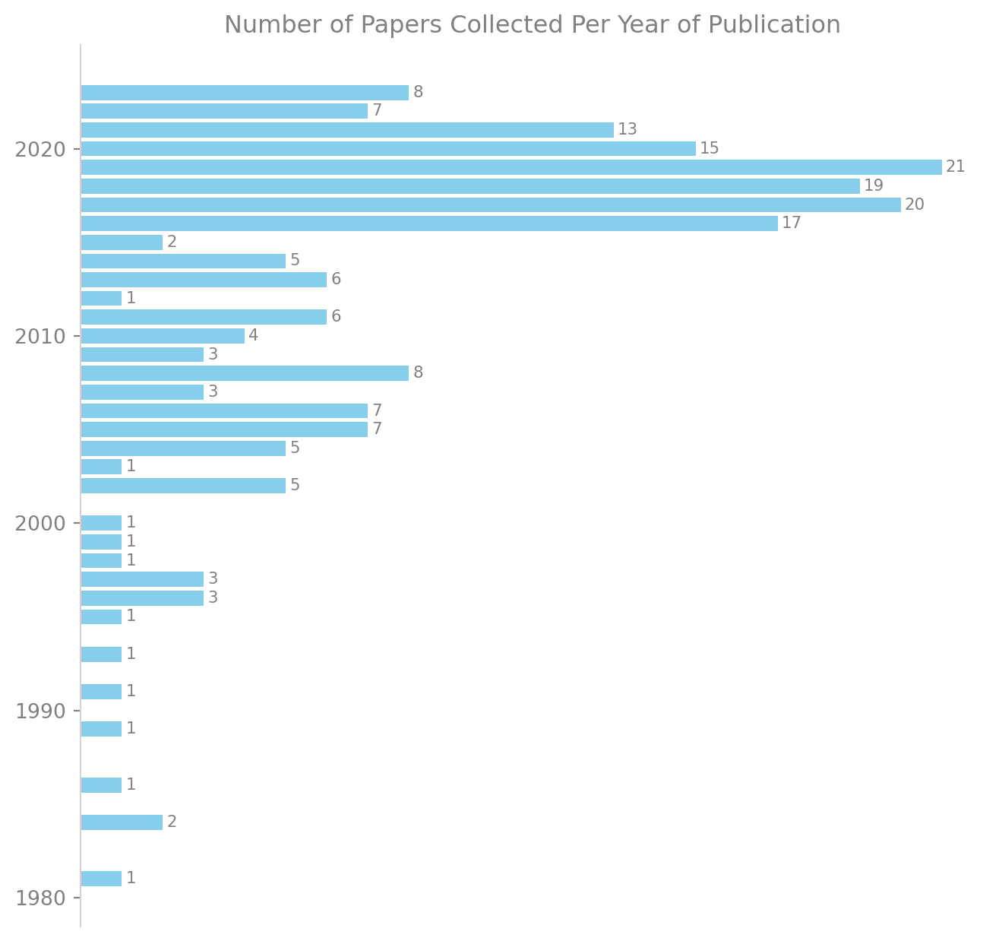
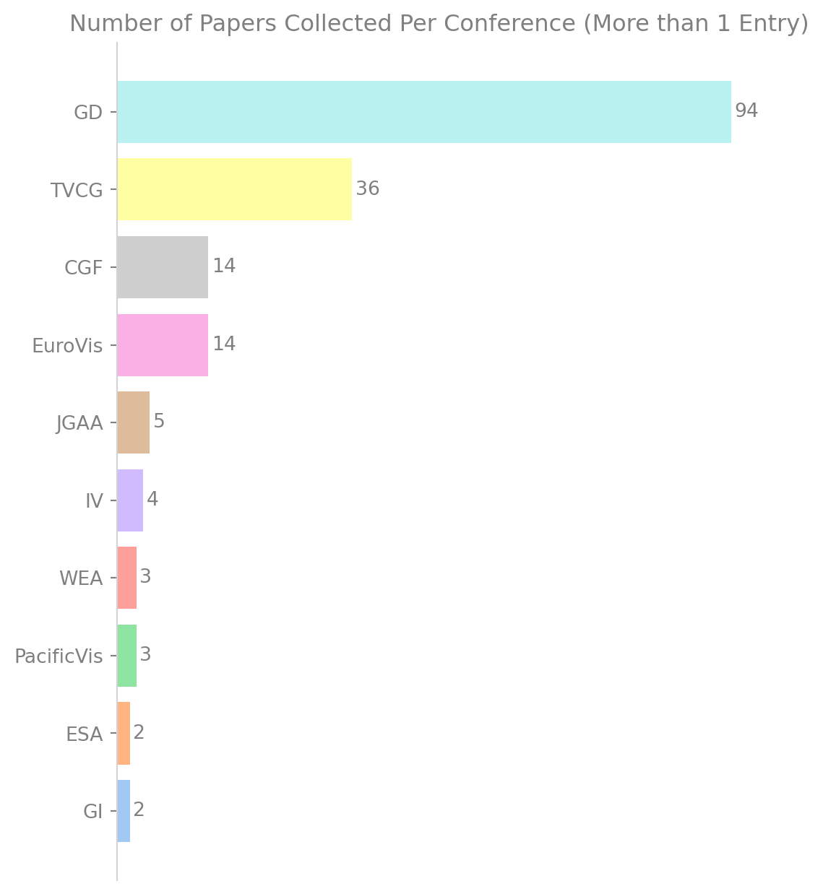

Benchmark Datasets for Graph Layout Algorithms
Sara Di Bartolomeo ![]()
Cody Dunne
1 Introduction
Benchmarking is a crucial aspect of computer science, as it allows researchers, developers, and engineers to compare the performance of various systems, algorithms, or hardware. A benchmark is a standardized test or set of tests used to measure and compare the performance of hardware, software, or systems under specific conditions. Benchmarking aims to provide objective and consistent metrics that allow for fair comparisons and informed decision-making. Benchmarks are widely used in various fields, including computer hardware evaluation, software optimization, and system performance analysis. In all these fields, benchmarking provides a standardized and objective way to compare and assess the performance of different systems, algorithms, or software implementations. It aids in making informed decisions about which solution best suits a specific use case or requirement.
The same is true for the field of graph drawing, and in particular, for studying the performance and results of graph layout algorithms. Benchmark datasets can provide a standardized set of graphs with known properties and characteristics. These graphs can vary in size, density, connectivity, and structure. Researchers can objectively compare their performance or the quality of their results by applying various graph layout algorithms to the same benchmark dataset.
Because of our own challenges in finding appropriate benchmark sets to evaluate layout algorithms that we developed, we built a collection of benchmark datasets used in previous graph layout algorithm papers and a website to peruse the collection we put together.
The key objective of the work we are doing with benchmark datasets is not only aimed at improving the discoverability of these datasets and easing the running of benchmarks for graph layout algorithms of a vast amount of types and categories, but we also want to place a strong emphasis on the replicability of the experiments that are run. Indeed, reliable access to datasets is fundamental for replicability.
- we catalog datasets commonly used in Research
- we provide a website to browse and search the datasets
- all of this is super important for replicability and reproducibility of results
- list lost datasets, how big of a pity is it that we lost some of them
2 Background
A number of efforts at cataloguing datasets have been done in the past. Outstanding instances, that most researchers working with data have probably encountered in their paths, are works such as the SNAP dataset catalog (Leskovec and Sosič 2016) and the Koblenz Network Collection (Kunegis 2013). These works have been instrumental in the development of the field of network science, however, they are not without limitations.
3 Data collection methodology
The information we collected is a by-product of a larger systematic review we conducted related to graph layout algorithms, which included 206 papers—the core of them being the last 7 years of Graph Drawing proceedings, filtering out the papers with no computational evaluations. We further expanded our collection of graph layout algorithm papers through IEEE search, and the ACM and Wiley digital libraries, to include papers from TVCG and CGF. For every paper, we collected which features were handled by the graph layout algorithm presented, and what dataset was used in the evaluation. In order to find the datasets, we first tried looking for the paper’s supplemental material, then tried Googling the name of the dataset or the name of the paper, and if we had not been able to find anything yet, we resorted to emailing the authors. When in doubt about the artifact replication policy, we emailed the owners or authors to ask about it. In cases where it was explicitly mentioned that approval should be received prior to redistribution, we did not redistribute the datasets. However, when we did not receive an answer or where it was not explicitly stated, we did collect and store the dataset on our own storage solution to preserve it. If any owner or author of a dataset discovers their own work linked in our collection and disagrees with this choice, we kindly request them to contact us, and we will promptly remove the entry. Furthermore, we want to emphasize that we do not assert any ownership rights over the datasets listed.
- talk about how the graph feature labels were collected
- facilitating comparisons and replication of results <- justification for what we did
- linking to specific papers that use that dataset - not seen in other network repositories!

Total papers: 1984 Sample of an evaluation
5 Examples
Let’s take a look at the AT&T dataset:
atnt_set = benchmark_data[benchmark_data["Name"] == "AT&T"]
# display the field page id
atnt_set.iloc[0]Name AT&T
Origin Notes Originally collected by Stephen North at AT&T ...
Origin Paper Drawing Directed Acyclic Graphs: An Experiment...
Originally found at http://www.graphdrawing.org/data.html
Size 1277 graphs, 10 to 100 nodes, 9 to 241 edges
Note Same as North DAG collection.
Appeared in years 2004,2005,2016,2018,2019,2011,1996,2017
Child collections North DAGs (Benchmark%20datasets%2064e0439269f...
link works? Yes
In repo? Yes
Graph features in papers generic,large,directed edges,layered graphs,n-...
graph features handled acyclic, directed edges
Related to Literature - Algorithm (Dataset tag relations) 1 Drawing Large Graphs with a Potential-Field-Ba...
is it stored properly? No
Type of Collection Uniform Benchmark
must be analyzed Yes
Reviewed NaN
format GraphML
Number of Graphs 1277.0
cleaned format? Yes
duplicate? No
Origin paper plaintext Drawing Directed Acyclic Graphs: An Experiment...
Page id e86f130c42344169a9d75a61abc7e487
Related to Literature - Algorithm (1) (Dataset tag relations) Drawing Large Graphs with a Potential-Field-Ba...
Added in paper Yes
Cleaned ALL data No
OSF link json https://files.osf.io/v1/resources/j7ucv/provid...
first look No
sparkline data {'min': 10, 'max': 100, 'step_size': 5, 'num_b...
unavailable/skip No
OSF link gexf https://files.osf.io/v1/resources/j7ucv/provid...
OSF link gml https://files.osf.io/v1/resources/j7ucv/provid...
OSF link graphml https://files.osf.io/v1/resources/j7ucv/provid...
Name: 4, dtype: objectatnt_set = benchmark_data[benchmark_data["Name"] == "AT&T"]
# display the field page id
atnt_set.iloc[0]["Related to Literature - Algorithm (1) (Dataset tag relations)"]'Drawing Large Graphs with a Potential-Field-Based Multilevel Algorithm (https://www.notion.so/Drawing-Large-Graphs-with-a-Potential-Field-Based-Multilevel-Algorithm-27a6b266bb2c4c92976ed04d2afe9bed?pvs=21), Simple and Efficient Bilayer Cross Counting (https://www.notion.so/Simple-and-Efficient-Bilayer-Cross-Counting-6f978d8b0ceb4a6eb7df52ed82999861?pvs=21), Drawing Large Graphs with a Potential-Field-Based Multilevel Algorithm (https://www.notion.so/Drawing-Large-Graphs-with-a-Potential-Field-Based-Multilevel-Algorithm-a4fe70c68ad64ed3849c47d95afc8798?pvs=21), An Experimental Comparison of Fast Algorithms for Drawing General Large Graphs (https://www.notion.so/An-Experimental-Comparison-of-Fast-Algorithms-for-Drawing-General-Large-Graphs-bbb7bb7d51d84d109030dee3c06d895d?pvs=21), A Natural Quadratic Approach to the Generalized Graph Layering Problem (https://www.notion.so/A-Natural-Quadratic-Approach-to-the-Generalized-Graph-Layering-Problem-bc71a4b3349649668c28d843a3e69037?pvs=21), Advances in the Planarization Method: Effective Multiple Edge Insertions (https://www.notion.so/Advances-in-the-Planarization-Method-Effective-Multiple-Edge-Insertions-c518ce875daa4fe7b003ad506eb9a347?pvs=21), Large-Graph Layout with the Fast Multipole Multilevel Method (https://www.notion.so/Large-Graph-Layout-with-the-Fast-Multipole-Multilevel-Method-def1fdc467f441abb94868eccd8a5a34?pvs=21), A Flow Formulation for Horizontal Coordinate Assignment with Prescribed Width (https://www.notion.so/A-Flow-Formulation-for-Horizontal-Coordinate-Assignment-with-Prescribed-Width-e1369233a80f4ae8a1ffbedd48c05be2?pvs=21), Compact Layered Drawings of General Directed Graphs (https://www.notion.so/Compact-Layered-Drawings-of-General-Directed-Graphs-f985ab75f9cb40d382f62f61eeff25c7?pvs=21)'atnt_set = benchmark_data[benchmark_data["Name"] == "AT&T"]
# display the field page id
atnt_set.iloc[0]["Graph features in papers"]'generic,large,directed edges,layered graphs,n-layers,DAG,hierarchical,layered graphs,n-layers,layered graphs,n-layers,generic,bipartite,layered graphs'References
Kunegis, Jérôme. 2013. “KONECT – The Koblenz Network Collection.” In Proc. Int. Conf. On World Wide Web Companion, 1343–50. http://dl.acm.org/citation.cfm?id=2488173.
Leskovec, Jure, and Rok Sosič. 2016. “SNAP: A General-Purpose Network Analysis and Graph-Mining Library.” ACM Transactions on Intelligent Systems and Technology (TIST), 1. https://doi.org/10.1145/2898361.